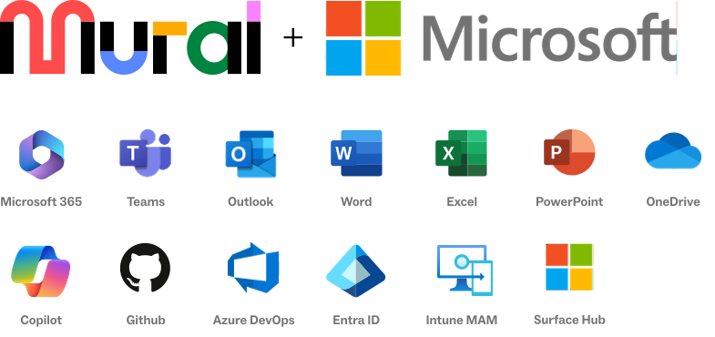

Miro gives you tools, but only Mural helps you transform your teamwork.
Enterprise teams need solutions that work across the organization. While Miro works for specific use cases, only Mural excels in cross-functional settings.
With greater customizability, stronger security, a more intuitive interface, and smart teamwork practices, Mural beats Miro for enterprise users.
Get started in an instant with no learning curve
Mural’s user-friendly platform makes it easy for anyone to get up and running in a flash. With built-in templates and Mural AI, you can streamline workflows and run more efficient brainstorms right away, in real-time or asynchronously.
Customized solutions for today and tomorrow
Every organization has its own unique needs. Mural’s best-in-class customer success and service teams are dedicated to tailoring a solution that works for you as you scale.
A platform and a system, all in one
Smart teamwork practices — based on the proven LUMA System™ — are embedded in Mural through tools and templates that help teams get to the good stuff, faster.
AI capabilities focused on the future of collaboration
Quickly generate ideas, create mind maps, cluster information, and more with our built-in AI. We also integrate with Microsoft Copilot for powerful AI functionality across the Microsoft ecosystem.
Mural offers best in class visibility, security, and control
Mural provides the security and controls enterprises require. Our data residency offering, identity management, data protection, information governance, and collaboration controls make Mural an enterprise partner you can trust.
of surveyed Fortune 500 organizations agree that they would recommend Mural over other whiteboard competitors because Mural’s enterprise product offerings and services are superior.1
1 Mural Survey, 2022. Retrieved from third party vendor.
4 things Miro customers miss
out on by not choosing Mural:
easy-to-use human-centered design combined with powerful AI
Mural’s human-centered design philosophy contributes to a product that is intuitive and user-friendly. AI is integrated to support the things people do best, assisting teams with idea generation, clustering of information, and streamlining redundant and repetitive tasks. Using Mural, teams can get started quickly and conquer the blank page by generating ideas, finding common themes, and expanding on concepts efficiently to solve problems and reach unexpected conclusions.
Unlike Miro, Mural excels as a transformation partner by actively addressing user engagement and motivation challenges. Mural provides much more than digital resources and onboarding programs; it integrates expert guidance, customized deployment, flexible growth models, and hands-on support, ensuring users understand the platform’s capabilities and are motivated to use them effectively. This approach is particularly beneficial for activating broader and more effective workflows across various organizational levels and teams.
Mural’s LUMA System offers a unique blend of advanced teamwork practices and thoughtfully-designed templates to accelerate innovation, resources, and training while enhancing productivity and creativity. We’re the only vendor dedicated to giving our customers not just a better tool, but a better way to work.
Mural’s unique set of features for those conducting workshops and meetings helps facilitators save time, stay in control, and keep sessions engaging. They allow for interactive guidance of participants, reduction in bias through private mode, and control of the experience through a custom toolbar. Experience a premium product for every employee that’s built to scale, able to provide stability with no loss of performance, even among thousands of participants.
The features enterprise leaders want,
the functionality enterprise teams need.
“More” isn’t the same as “better.” Miro has features that might be exciting for designers but make little sense for most enterprise users. As business needs grow and evolve, particularly when cross-functional coordination is required, Miro’s complexity can pose a challenge.
User feedback indicates that Miro struggles in cross-functional settings due to:
- Overwhelming complexity: Miro’s suite of features, while comprehensive, can be overwhelming for users, particularly in cross-functional collaboration. This complexity can make the platform’s entry point especially challenging to navigate, and users may find it overly complicated.
- Difficulty in demonstrating cross-functional use cases: Miro isn’t built for cross-functional use cases and can require additional, often costly, support services to work across the enterprise, which can be a huge barrier for organizations that need a wall-to-wall solution.
- Workflow integration and performance challenges: While Miro boasts a wide array of integrations, the functionality and maintenance of these integrations is inconsistent, often forcing users to rely on external tools. This creates a disjointed experience, contrary to the seamless workflow Miro claims to provide. Miro’s performance challenges are especially acute when it comes to scale, making it an unreliable solution for the interactions with customers and outside participants where you can’t risk failure.
“Mural has made team efforts simple.
I am able to share concepts in stages, make edits, build IA wireframes, and basic design concepts within the tool so non-design contributors can collaborate without limitations.”
IT Specialist
State & Local Government
Mural is built for Microsoft-powered organizations and designed to integrate seamlessly with the Microsoft ecosystem to scale effective teamwork

The most comprehensive visual collaboration solution for the Microsoft ecosystem
Mural’s trusted platform and deep integrations deliver a connected experience where you’re already working:
- 10+ years of investment across Microsoft
- Powered by Microsoft Azure
- Integrations with core M365 apps like Outlook, Office.com, Excel, PowerPoint, OneDrive, and Teams — and winner of Microsoft’s 2022 Partner of the Year award
- Integration with Microsoft Azure DevOps for connected agile workflows
- Azure Active Directory for modern identity management
- Buy through Azure Marketplace and retire Microsoft Azure Consumption Commitment (MACC)
Miro or Mural?
Miro’s good for capturing ideas, but Mural can help transform your teamwork.
| Miro | Mural | |
|---|---|---|
| Capabilities | ||
| Delegate Facilitators (delegate full facilitation controls to any user) | × | ✓ |
| Support basic use cases with few participants and up to scaled collaboration with thousands of participants | × | ✓ |
| Focus Mode (simplified view with condensed tools and navigation) | × | ✓ |
| Outline Mode (custom shareable and exportable rich media outlines) | × | ✓ |
| Custom Toolbar (control the tools members, guests, and visitors can use) | × | ✓ |
| Microsoft AI Copilot Integration | × | ✓ |
| Platform | ||
| In-App Learning Journeys & Collaboration Guides | × | ✓ |
| In-App Chat Support | × | ✓ |
| LUMA System™ Template | × | ✓ |
| Human-Centered Design Certifications | × | ✓ |
| Custom Transformation Professional Services | × | ✓ |
| Secure Collaboration | ||
| Confidential Rooms (Mural/board spaces with an added level of security) | × | ✓ |
| Mural insights (activity analytics in a Mural/board) | × | ✓ |
| Custom Guest Deactivation Periods | × | ✓ |
| Visitor Access Link Expiration Date | × | ✓ |
Pricing Transparency. No catches,
no surprises.
Mural has a transparent approach to pricing that has been developed over 11+ years
of focusing on enterprise needs. Simply put, we understand how to partner with enterprise customers. With Mural’s new Enterprise plan, every employee can experience a premium product that isn’t priced like one.
Mural’s enterprise sales experts are here to support you, and our pricing and packaging are designed to meet your organization’s needs.
- You can trust Mural’s pricing and packaging to meet your needs
- Pricing stays predictable, even as you grow with Mural
- No more concerns about excluding collaborators due to license costs
- Enjoy seamless and affordable collaboration with internal and external participants
- Easily manage all your memberships
- Don’t overpay. Avoid surprise bills and unanticipated price hikes
Enterprise pricing can be discussed with our sales team.
Unpacking SAP’s ROI with Mural
increase in design thinking project efficiency from presales
reduction in avoidable
in-person workshops
improvement in project efficiency from UX design
increase in projects enabled in hybrid environment
improvement in design thinking project efficiency from service sales
Source: Mural Survey, 2022. Retrieved from third party vendor.